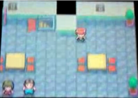
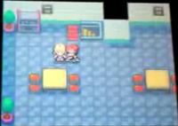

Jubilife Condominiums floors 3 and 4
Alternative map locations (Generation I) | Alternative Route 104 map | Battle Park (Platinum) | Generation II Safari Zone | Haunted House | Jubilife Condominiums floors 3 and 4 | Map 0x0B (Generation I) | Map 0x6F (Generation I) | Mystery Zone | Record Corner (FireRed/LeafGreen) | R/S Flower Shop (Festa 2002 demo) | Special (location) | Special Area | Sevii Islands 8 and 9 | Unused Olivine City house | Unused Sunyshore City house | Unused Celadon City house
| Reported by DragonMaster91 Verified by ~Poke~ |
| This article is incomplete. Please feel free to add any missing information about the subject. It is missing: {{{1}}}. |
In Pokémon Diamond and Pearl, in addition to the first and second floors of the Jubilife Condominiums building, there is unused map data for two additional floors that are inaccessible in normal gameplay.
One of them (floor 4) has stairs that link to the other lower floor (or floor 3), while the lower floor links to the used floor 2, but in the void.
On the lower unused floor, there are no stairs that lead to 'floor 4'.
Both floors use the same tileset as Jubilife Condominiums floors 1 and 2.
The void near 'floor 4' can be accessed with Tweaking (video), but a 'web' (impassable tiles) block the player from entering it. For unknown reasons, the Pokémon Gym music plays there.
Third floor
| Town Map name: Unknown  Identifier (HEX) Unknown Identifier (DEC) Unknown Default track Unknown Tileset Jubilife Building Size Unknown Map type Building Tweaking method? Not found
|
The third floor is visually identical to the second floor, although no NPCs are sitting at any of the tables. Instead, there are two NPCs, one who is female and another who appears as a bulky male character. Both NPCs are facing down towards the wall and are positioned two steps (horizontally) away from each other.
When spoken to, the male character responds with the dialogue string "I can trade Pokémon around the world with Nintendo WFC... Just hearing that gets my heart racing!" and the female character responds with "The world you can reach with Nintendo WFC... I can't tell if it's huge or small."
Fourth floor
| Town Map name: Unknown  Identifier (HEX) Unknown Identifier (DEC) Unknown Default track Unknown Tileset Jubilife Building Size Unknown Map type Building Tweaking method? Yes (surrounding void)
|
The fourth floor is visually identical to both the third and second floor, with the exception of a blonde haired girl, who is facing southwards towards the leftmost table. If the player speaks to the girl she will respond with the text; "You managed to come out here? That takes focus! For someone like you, this might be perfect." After the player speaks with her, she will give them a Focus Band.